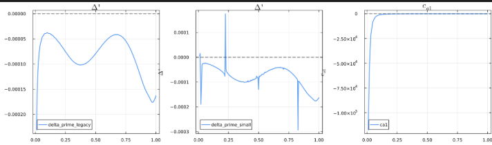

Local Stability
LocalStability evaluates the local, high-$n$ ideal and resistive criteria on every flux surface of the equilibrium: the Mercier interchange index $D_I$, the Glasser–Greene–Johnson resistive-interchange index $D_R$ and the ballooning stability index, with an optional scan for the critical pressure gradient. It runs as its own stage, after ForceFreeStates and on the same equilibrium, and is the local counterpart of the global analysis on the Stability page.
What it computes
- Mercier criterion $D_I$: the ideal interchange index of each surface. A surface is Mercier unstable where $D_I > 0$; the same number sets the exponents $-1/2 \pm \sqrt{-D_I}$ of the large and small solutions that the global integration matches at every rational surface.
- Resistive interchange $D_R = D_I + (H - 1/2)^2$, with $H$ from the flux-surface averages of Glasser, Greene and Johnson (1975). $D_R > 0$ indicates resistive interchange instability.
- Ballooning stability $\Delta'$: the high-$n$ ballooning index, obtained by integrating the marginal ballooning equation along the field line and matching the solution to its asymptotic forms at both ends (Connor, Hastie and Taylor (1978)). It is distinct from the tearing Δ′ of
SingularSurfaces/; $\Delta' = 0$ is the marginal ballooning boundary. - Critical pressure gradient: with
alpha_boundary_scan = truethe pressure gradient of each surface is scaled until the ballooning boundary is reached, giving the normalized gradient $\alpha$ and its critical value $\alpha_\mathrm{crit}$, the s–α diagram collapsed to a profile.
Governing equations
The stage integrates the marginal ballooning equation of Connor, Hastie and Taylor (1978) for the perturbation $\hat{\varphi}$ along the field line on the covering space $-\infty < \theta < \infty$, where the shear $q'$ enters through $|\nabla\beta|^2$ of the Clebsch angle $\beta$ and the projected curvature $\kappa_w = \kappa_n - q'\theta\,\kappa_s$ splits into a non-secular part and a secular part driven by the shear ($\chi$, $P'$ and $\mathcal{J}$ below are the poloidal flux, the pressure gradient and the Jacobian). The code integrates it as the first-order system $\partial_\theta \mathbf{u} = \mathbf{L}\mathbf{u}$ in $\mathbf{u} = (\hat{\varphi},\ |\nabla\beta|^2 \chi' \partial_\theta\hat{\varphi}/(B^2\mathcal{J}))$.
As $\theta \to \infty$ the coefficients diverge like $q'^2\theta^2|\nabla\psi|^2$. The canonical transformation $\mathbf{R} = \operatorname{diag}(\theta^{-1/2}, \theta^{1/2})$ followed by a shear $\mathbf{S}$ with $\sigma = -2\pi f P' q'/(\chi'^2 B^2)$ makes the leading-order matrix $\mathbf{N}_0$ finite, and the period average of that matrix fixes the asymptotic exponent:
\[\det[\langle\mathbf{N}_0\rangle - \alpha\mathbf{I}] = 0, \qquad \alpha = \pm\sqrt{-D_I} .\]
This is the Mercier index: $D_I = -\alpha^2$ evaluated from $\langle\mathbf{N}_0\rangle$ equals the classical surface-average Mercier expression, and $D_I > 0$ (complex exponents) is interchange instability. The large and small solutions behave as $\theta^{\alpha - 1/2}$ and $\theta^{-\alpha - 1/2}$; the boundary condition at the finite integration limit $\theta_\max$ includes the first-order correction of the asymptotic series, and the ballooning index is the jump in the logarithmic derivative of the solution between the two ends.
The s–α diagram scans the local stability of one surface without recomputing the equilibrium: a thin-layer ordering promotes local perturbations of the pressure gradient $P'_s$ and shear $q'_s$ to order unity in the derivatives, and the integrated shear $I_\mathrm{tot} = q'(\theta - \theta_k) + I_\mathrm{per}$ carries them into $|\nabla\beta|^2$ and $\kappa_w$. The cross term and the quadratic term in the perturbed shear are kept in the matrix assembly, and the ballooning angle $\theta_k$ is the gauge where the total accumulated shear vanishes, $I_\mathrm{tot}(\theta_k) = 0$.
Running it
A [LocalStability] section runs the stage; it needs [ForceFreeStates] in the same deck. Its keys are the problem settings, and the optional [Ballooning] section holds the Ballooning numerical settings, as in examples/DIIID-like_ideal_example/gpec.toml:
[LocalStability]
theta_k = 0.0 # ballooning angle
alpha_boundary_scan = true # also find the critical alpha of each surface
[Ballooning]
ode_tol = 1e-8
n_scan = 24 # alpha scan points
max_alpha_scale = 8.0
alpha_tol = 1e-3
psi_window = [0.1, 0.99] # surfaces scanned for the alpha boundaryA script runs the same stage with solve(LocalStabilityProblem(eq; theta_k=0.0, alpha_boundary_scan=true), Ballooning(); verbose=false); see the Scripting API. examples/DIIID-like_ideal_example/analyze_example.jl plots the $s$ and $\alpha$ profiles, the $D_I$ and ballooning $\Delta'$ profiles, and the two-dimensional s–α maps with their zero contours, using salpha_reference, compute_ballooning_stability! and scan_delta_prime_map.
Outputs
| Dataset | Meaning |
|---|---|
LocalStability/psi | the flux surfaces, ψ_N |
LocalStability/D_I | Mercier index; $D_I > 0$ is interchange unstable |
LocalStability/D_R | resistive interchange index; $D_R > 0$ is unstable |
LocalStability/ballooning_Delta_prime | ballooning stability index along psi; $\Delta' = 0$ is marginal |
LocalStability/ballooning_psi, alpha, alpha_critical | with alpha_boundary_scan = true: the scanned surfaces, their normalized pressure gradient and its critical value |
SingularSurfaces/D_I repeats the Mercier index at the rational surfaces of the global solve.
Numerical notes
- The non-secular curvature $\kappa_n$ is evaluated from the geometric expression in $\mathcal{J}B$ and its $\psi$ and $\theta$ derivatives rather than from Grad–Shafranov identities, which amplify equilibrium errors near the edge.
- Background quantities are differentiated once, in a first loop; the s–α perturbations are then added algebraically, so noisy geometric derivatives are never repeated.
- The integration limit is set where the quadratic term of the wave-number factor dominates, $\theta_\max = \min(16.5,\ 10\max_\theta\sqrt{|c/a_2|})$, and the ballooning index is taken from a solution forced to vanish at $\pm\theta_\max$ rather than from the coefficient of the small solution, which is numerically fragile:

- The periodic shear functions are shifted to vanish at $\theta_k$ so the gauge $I_\mathrm{tot}(\theta_k) = 0$ holds exactly.
API reference
GeneralizedPerturbedEquilibrium.LocalStability.Ballooning — Type
Ballooning(; ode_tol=1e-8, n_scan=24, max_alpha_scale=8.0, alpha_tol=1e-3, psi_window=(0.1, 0.99))The local-stability algorithm: the ballooning coefficient system per flux surface, plus the BALOO-style α-boundary scan. Its fields control numerical accuracy and scan resolution; the angle and choice of outputs belong on LocalStabilityProblem. Pass verbose=true to solve for progress and per-surface α-scan failures.
Fields
ode_tol::Float64- Relative and absolute tolerance of the ballooning ODE integration behind Δ'.n_scan::Int- Resolution of the α scan for the first boundary (seeballooning_alpha_boundary).max_alpha_scale::Float64- Upper end of the α search, as a multiple of the experimental α; no crossing below it gives NaN.alpha_tol::Float64- Bisection tolerance of the critical α, in the same multiples.psi_window::Tuple{Float64,Float64}- ψ_N range of the α scan; surfaces outside it are NaN.
GeneralizedPerturbedEquilibrium.LocalStability.LocalStabilityProblem — Type
LocalStabilityProblem(equil; theta_k=0.0, alpha_boundary_scan=true)Local high-n stability of an equilibrium: the Mercier and resistive interchange criteria and the ballooning Δ' on every flux surface, and the first ballooning α boundary. Solve with solve(prob, Ballooning(); verbose=false) to get a LocalStabilityResult. A deck poses the same problem through its [LocalStability] section.
Fields
equil::Equilibrium.PlasmaEquilibrium- The equilibrium the profiles are computed on.theta_k::Float64- Ballooning angle θ_k, used by both the profile scan and the α-boundary scan.alpha_boundary_scan::Bool- Run the α-boundary scan, a root find per ψ surface;falseleaves the α fields empty.
GeneralizedPerturbedEquilibrium.LocalStability.LocalStabilityResult — Type
LocalStabilityResultThe local-stability profiles returned by solve(::LocalStabilityProblem, ::Ballooning).
Fields
psi::Vector{Float64}- Normalized flux grid of the profiles (the equilibriumprofiles.xs).D_I::Vector{Float64}- Mercier interchange criteriondet(d0bar); stable where negative.D_R::Vector{Float64}- Resistive interchange criterionD_I + (H - 1/2)²(seeresistive_interchange_h).ballooning_Delta_prime::Vector{Float64}- High-n ballooning Δ', zero for ψ > 1.ballooning_psi::Vector{Float64}- Grid of the α-boundary scan; empty when the scan is off.alpha::Vector{Float64}- Experimental α onballooning_psi, NaN outside the scan window.alpha_critical::Vector{Float64}- First-boundary critical α onballooning_psi, NaN outside the scan window or with no boundary.di_psi- Cubic interpolant ofD_I·ψoverpsi, for evaluatingD_Ioff the grid (seemercier_D_I).problem::LocalStabilityProblem- The problem solved.algorithm::Ballooning- The ballooning settings it was solved with.
GeneralizedPerturbedEquilibrium.LocalStability.ballooning_alpha_boundaries — Method
ballooning_alpha_boundaries(plasma_eq; theta_k=0.0, max_alpha_scale=8.0, n_scan=24, verbose=false)Profile driver returning the experimental pressure gradient alpha, the first stability boundary alpha_critical1 (lowest Δ' zero), and the second stability boundary alpha_critical2 (next zero above it) versus normalized flux psi, from ballooning_alpha_crossings at each surface. Arrays contain NaN where no boundary exists.
Crossings closer together than the n_scan step can be missed, showing up as isolated outliers on the boundary curves. Surfaces outside BALLOONING_SCAN_PSI_WINDOW and failed surfaces are NaN.
GeneralizedPerturbedEquilibrium.LocalStability.ballooning_alpha_boundary — Method
ballooning_alpha_boundary(plasma_eq; theta_k=0.0, n_scan=24, max_alpha_scale=8.0, tol=1e-3,
psi_window=BALLOONING_SCAN_PSI_WINDOW, verbose=false)Profile driver for the BALOO-style ballooning stability diagram: the experimental pressure gradient alpha (from salpha_reference) and the first stability boundary alpha_critical (from critical_ballooning_alpha) versus normalized flux psi. Surfaces with alpha > alpha_critical are ballooning-unstable.
Faster than ballooning_alpha_boundaries when only the first boundary is needed, since each surface stops at its first crossing. Raise n_scan (e.g. 64) on edge surfaces where Δ' poles can shift a coarse first crossing. Only surfaces inside psi_window are scanned; skipped surfaces, failures, and surfaces with no boundary in range are NaN.
GeneralizedPerturbedEquilibrium.LocalStability.ballooning_alpha_crossings — Method
ballooning_alpha_crossings(psi_idx, plasma_eq; theta_k=0.0, max_alpha_scale=8.0, n_scan=24, tol=1e-3, max_crossings=0)Locate the marginal-stability crossings of the ballooning Δ' along the pressure-gradient scaling α/α_exp ∈ [0, max_alpha_scale] at fixed magnetic shear. Marching up from the ballooning-stable α = 0 anchor, every sign change between scan samples is bisected to tol; sign changes with endpoint |Δ'| far above the anchor magnitude are Δ' pole crossings (not marginal points) and are skipped. The first crossing is the first stability boundary, the second the second-stability boundary, and so on.
Returns (scales, alphas, reference) with alphas = alpha_ref * scales, ordered in increasing α; empty vectors if Δ' never crosses. With max_crossings > 0 the scan stops after that many crossings.
GeneralizedPerturbedEquilibrium.LocalStability.ballooning_delta_prime — Method
ballooning_delta_prime(psi_idx, plasma_eq; corr_qprime=0.0, corr_pprime=0.0, theta_k=0.0)Ballooning Δ' and di = det(d0bar) at one flux surface with corrected profile gradients: corr_qprime is added to dq/dpsi_norm and corr_pprime to d(mu0*p)/dpsi_norm. Returns (delta_prime, di).
GeneralizedPerturbedEquilibrium.LocalStability.ballooning_delta_prime_map — Method
ballooning_delta_prime_map(plasma_eq; theta_k=0.0, max_alpha_scale=8.0, n_alpha=61, max_surfaces=40, verbose=false)Map the ballooning Δ' over the (ψN, α) plane at fixed magnetic shear: at each flux surface, scan the pressure-gradient scaling from 0 to `maxalphascaletimes the experimental α. The flux grid is thinned to at mostmaxsurfaces` surfaces to bound the cost (each point is one ballooning ODE solve).
Returns a NamedTuple (psi, alpha_scales, alpha_ref, delta_prime) where delta_prime is [n_surf × n_alpha] with NaN on failed surfaces; physical α = alpha_ref * scale.
GeneralizedPerturbedEquilibrium.LocalStability.ballooning_qprime_boundaries — Method
ballooning_qprime_boundaries(plasma_eq; theta_k=0.0, min_qprime_scale=-2.0, max_qprime_scale=4.0, n_scan=24, verbose=false)Profile driver returning the experimental shear profile qprime (dq/dpsi_norm), the critical shear qprime_critical1 below which the surface is ballooning unstable at the experimental pressure gradient (first crossing marching down from max_qprime_scale), and qprime_critical2, the next crossing at lower (or reversed) shear, versus normalized flux psi, from ballooning_qprime_crossings at each surface. Arrays contain NaN where no boundary exists.
GeneralizedPerturbedEquilibrium.LocalStability.ballooning_qprime_crossings — Method
ballooning_qprime_crossings(psi_idx, plasma_eq; theta_k=0.0, min_qprime_scale=-2.0, max_qprime_scale=4.0, n_scan=24, tol=1e-3)Locate the marginal-stability crossings of the ballooning Δ' along the magnetic shear scaling q'/q'_exp ∈ [min_qprime_scale, max_qprime_scale] at the fixed experimental pressure gradient — the q'-channel counterpart of ballooning_alpha_crossings. The march starts from the first-regime-stable high shear end (max_qprime_scale) and proceeds downward; sign changes are bisected and Δ' pole crossings skipped exactly as in the α scan, so the first crossing is the critical q' and the second the re-entry to stability at lower (or reversed) shear.
Returns (scales, qprimes, reference) where qprimes = qprime_norm_ref * scales is in dq/dpsi_norm units, ordered in decreasing q'.
GeneralizedPerturbedEquilibrium.LocalStability.ballooning_qprime_delta_prime_map — Method
ballooning_qprime_delta_prime_map(plasma_eq; theta_k=0.0, min_qprime_scale=-2.0, max_qprime_scale=4.0, n_qprime=61, max_surfaces=40, verbose=false)Map the ballooning Δ' over the (ψN, q') plane at the fixed experimental pressure gradient: at each flux surface, scan the magnetic shear scaling from `minqprimescaletomaxqprimescaletimes the experimental q' — the q'-channel counterpart of [ballooningdeltaprimemap](@ref). The flux grid is thinned to at mostmax_surfaces` surfaces to bound the cost.
Returns a NamedTuple (psi, qprime_scales, qprime_ref, delta_prime) where delta_prime is [n_surf × n_qprime] with NaN on failed surfaces; physical q' = qprime_ref * scale in dq/dpsi_norm units.
GeneralizedPerturbedEquilibrium.LocalStability.compute_ballooning_ode — Method
compute_ballooning_ode(solution, parameters, poloidal_angle) -> SVector{2,Float64}Out-of-place RHS of the ideal marginal ballooning equation d/dθ(f·dy/dθ) = g·y, written as dy₁/dθ = y₂/f, dy₂/dθ = g·y₁ with y₁ = y and y₂ = f·dy/dθ.
Arguments
solution: State[y₁, y₂]as anSVector{2}.parameters: NamedTuple(itp, coeffs, theta_min, theta_period, hint)built byintegrate_ballooning_ode.poloidal_angle: Extended poloidal angle θ.
GeneralizedPerturbedEquilibrium.LocalStability.compute_ballooning_stability! — Method
compute_ballooning_stability!(locstab_fs, plasma_eq; theta_k=0.0, compute_delta_prime=true, ode_tol=1e-8, verbose=false)Local high-n stability on every flux surface, threaded over surfaces. Fills locstab_fs in place:
- Column 1:
det(d0bar) * ψ(Mercier interchangeD_I) - Column 2:
D_R * ψ, resistive interchange withHfromresistive_interchange_h - Column 4: ballooning Δ' (only for ψ ≤ 1 and
compute_delta_prime=true)
ode_tol is the relative and absolute tolerance of the ballooning ODE integration.
GeneralizedPerturbedEquilibrium.LocalStability.critical_ballooning_alpha — Method
critical_ballooning_alpha(psi_idx, plasma_eq; theta_k=0.0, max_alpha_scale=8.0, n_scan=24, tol=1e-3)First infinite-n ballooning stability boundary at one flux surface: the lowest Δ' zero from ballooning_alpha_crossings. α is linear in dp/dψ, so the boundary maps directly to α_crit = α_ref * scale_crit.
Returns (alpha_crit, alpha_scale_crit, found). When no crossing exists within max_alpha_scale (always stable, or second-stability access) alpha_crit = NaN and found = false.
GeneralizedPerturbedEquilibrium.LocalStability.integrate_ballooning_ode — Method
integrate_ballooning_ode(ode_coefficient_spline; theta_k=0.0, tol=1e-8)Integrates the ballooning ODE inward from ∓theta_max to ∓MATCHING_POINT and returns (value=Δ',) with Δ' = (y'/y)_right - (y'/y)_left, or (value=NaN,) if either solve fails. tol is the relative and absolute ODE tolerance.
GeneralizedPerturbedEquilibrium.LocalStability.mercier_D_I — Method
mercier_D_I(result::LocalStabilityResult, psi) -> Float64Mercier D_I at psi, interpolated through the smooth D_I·ψ profile rather than D_I itself.
GeneralizedPerturbedEquilibrium.LocalStability.resistive_interchange_h — Method
resistive_interchange_h(flux_surface_index, plasma_eq)The H of the resistive interchange criterion D_R = D_I + (H - 1/2)² at one flux surface, from flux-surface averages of field and metric quantities [Glasser-Greene-Johnson; Glasser Phys. Plasmas 23, 112506 (2016)].
GeneralizedPerturbedEquilibrium.LocalStability.salpha_reference — Method
salpha_reference(psi_idx, plasma_eq)Compute local s-alpha reference values and physical profile derivatives at one flux surface.
GeneralizedPerturbedEquilibrium.LocalStability.scan_delta_prime_map — Method
scan_delta_prime_map(psi_idx, plasma_eq; s_scales, alpha_scales, ...)s-α scan at one flux surface: scales dq/dpsi by s_scales and dp/dpsi by alpha_scales and returns the Δ' and det(d0bar) maps over the [s, α] grid, NaN where a point fails.
GeneralizedPerturbedEquilibrium.LocalStability.second_critical_ballooning_alpha — Method
second_critical_ballooning_alpha(psi_idx, plasma_eq, alpha_scale_crit1; max_alpha_scale=8.0, n_scan=24, tol=1e-3)Second (upper) ballooning stability boundary at one flux surface: the first Δ' zero above alpha_scale_crit1 (as returned by critical_ballooning_alpha), from ballooning_alpha_crossings. Returns the physical critical α, or NaN if no such crossing exists within max_alpha_scale.
GeneralizedPerturbedEquilibrium.Utilities.save_to_hdf5 — Method
save_to_hdf5(target, result::LocalStabilityResult)Save the local-stability profiles and ballooning boundary scan, and record the problem and settings in Input/.